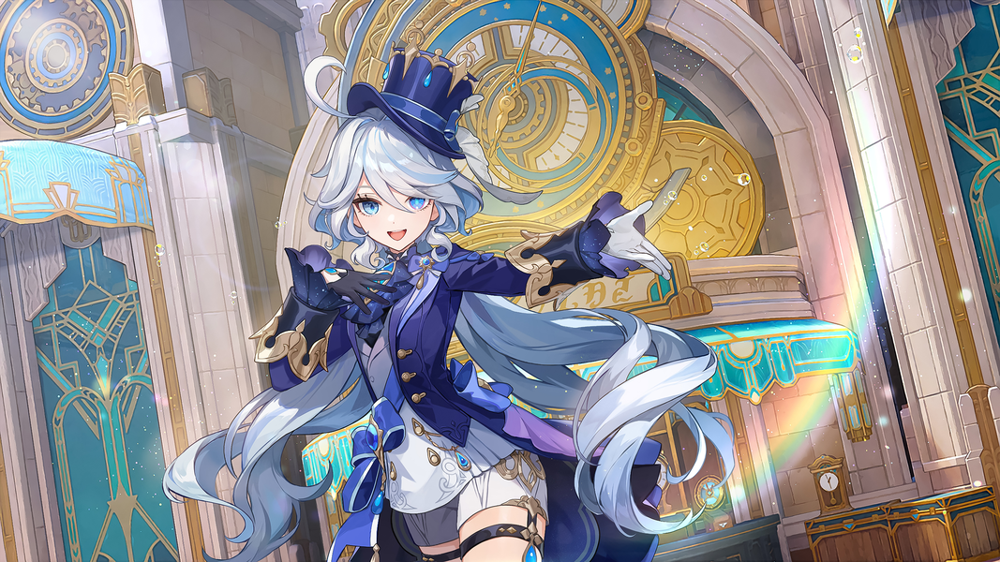

🎨 舞台形象设计解析
服装设计灵感
芙宁娜的舞台服饰融合了多重设计元素，展现出独特的艺术风格：
- 晨礼服基础：日常服饰以晨礼服为基础，搭配西方女性礼服衬裙样式的改良后摆
- 鱼尾装饰：后摆的鱼尾造型灵感来源于小美人鱼的故事，展现灵动气质
- 皇室元素：皇冠和绶带借鉴欧洲皇室最喜爱的配饰，彰显尊贵身份
- 男女混搭：参考究斯特科尔的海蓝色西装搭配白色晨礼服
- 细节设计：蓝色绶带上装饰蓝色宝石，后更换为水元素神之眼
- 下身搭配：白色短裤配黑色腿环，白袜融入拉夫领元素
发型与妆容
芙宁娜的造型设计体现了她身份的特殊性：
- 异色瞳孔：左眼深蓝虹膜配浅色瞳孔，右眼浅蓝虹膜配深色瞳孔，呈泪滴状
- 发型变化：神格状态为白长直，人格状态为蓬松短发配两条卷发
- 卸任后变化：剪掉两条卷发，展现全新的自我
- 皇冠礼帽：印有鸢尾花图案，彰显高贵气质
- 发色特征：白色长发带有浅蓝色挑染，发漩处有高高翘起的白色呆毛
- 水滴睫毛：如同水滴般的睫毛增添灵动美感
舞台表现力
作为枫丹的"大明星"，芙宁娜的舞台形象经过精心塑造：
- 仪态优雅：举手投足间尽显舞台女王的风范
- 戏剧化表演：擅长故弄玄虚，浮夸言辞成为标志性特征
- 情感传递：通过细微表情和肢体语言打动观众
- 气场强大：站在舞台中央便是全场焦点
- 角色塑造：为符合民众期待，刻意塑造强势耀眼的神明形象
- 沉醉赞美：享受子民的崇拜与赞美，如同真正的明星
设计理念
角色原画设计融入了许多矛盾的要素：
- 性格两面性：表面端着架子，私底下其实是活泼的小姑娘
- 艺术参考：借鉴经典音乐剧、戏剧、电影的设计元素
- 神之眼设计：后续特别设计的水元素神之眼
- 服装变化：身份切换时白色衣物变为黑色，礼帽颜色加深
- 矛盾要素：条状头发、异色瞳孔等设计展现角色独特性
- 变装设计：原画最初设计多套服装，最终选择两套最优方案




🎤 舞台女王的表演技艺
声乐技巧
拥有跨越三个八度的音域，能够轻松驾驭从低沉的女中音到高亢的花腔女高音。她的颤音如同水波般细腻，气息控制精妙，每一个音符都能精准传达情感，如同纯水精灵在歌唱。
舞台形体
每一个动作都经过精心设计，举手投足间尽显优雅。她的水袖舞更是一绝，长袖挥舞间仿佛真的有水在舞台上流动，营造出如梦似幻的视觉效果，完美展现水元素的灵动之美。
角色诠释
能够深入角色的内心世界，将复杂的情感通过细微的表情和肢体语言传递给观众。她最擅长演绎神性与人性的矛盾——在《罪人舞步旋》中展现五百年孤独的神明，在《自由之歌》中诠释平凡却坚韧的人类。
舞台气场
只要站在舞台中央，她就能成为全场的焦点。五百年的"神明"扮演经历赋予她独特的王者气质，举手投足间的自信与威严让她成为当之无愧的"舞台女王"。但在卸任后，她展现出更真实、更温暖的舞台魅力。
🏆 演艺成就
📚 枫丹文化百科
审判与戏剧文化
审判即演出
在芙宁娜的统治下，审判是枫丹最重要的公众活动，也是一种演出。真实与虚幻，闹剧和悲剧平等地上演，她将法庭变成了舞台，将审判变成了戏剧。
神明的表演
为了扮演枫丹民众想象中的神明，芙宁娜努力让自己变得浮夸，成为一个热爱法庭上的一切闹剧，甚至渴求审判诸神的神明。她很少过问国家的政事，在枫丹扮演着大明星的角色。
吉祥物般的存在
在枫丹人眼里，芙宁娜就像是吉祥物一样。她是枫丹的象征，是歌剧舞台上永恒的主角，也是民众崇拜和赞美的对象。
芙宁娜的文化影响
时尚潮流引领
芙宁娜的舞台服装常常引领枫丹的时尚潮流，她的标志性蓝白礼服、皇冠礼帽和鱼尾装饰成为了经典。她的服饰设计融合了男女混搭风格，影响了整个枫丹的审美。
语言艺术影响
她的台词风格影响了枫丹的语言表达，人们开始模仿她那种优雅而富有戏剧性的说话方式。"芙宁娜式发言"成为了一种流行的表达方式，强调华丽辞藻和夸张语调。
精神象征意义
芙宁娜成为了枫丹精神的象征——为了正义可以牺牲自我，为了使命可以承受五百年的孤独。她从神明到凡人的蜕变，让人们看到了勇气、坚韧与真实的价值。